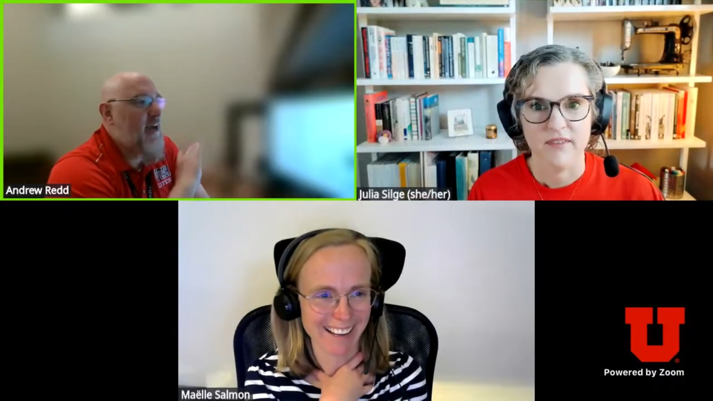

Julia Silge, co-organizer of the Salt Lake City R User Group, recently talked to the R Consortium about sustaining an active R community in a region without a central tech hub. Julia shared how she discovered R and became deeply engaged with its open-source ecosystem. She discussed the group’s dual-format meetups, which include remote talks streamed via YouTube and quarterly in-person gatherings, as well as efforts to make the community inclusive for both local professionals and a wider audience. She also highlighted a recent session on advanced Git practices and an upcoming talk on sparse data structures in the tidymodels framework.
Do you host online or in-person meetups?
We try to have a meeting most months, although we slow down a bit during the summer. There are two types of meetings we hold. The first type features a speaker who gives a talk. Since the pandemic began, we have been hosting these talks remotely via Zoom, rather than in person. We’ve found that this format works very well, allowing us to connect with people from all over, not just those in the Salt Lake area.
These meetings are scheduled during lunchtime in our local time zone, allowing those of us in the area to take a break from work and join in to hear and learn about various topics. For our attendees in European time zones, the talks take place in the evening, which has worked out nicely.
The second type of meeting we have is an in-person gathering that occurs about once a quarter. There isn’t a speaker for these events; instead, we focus on networking and casual conversations about what everyone is working on. These in-person meetings are only for residents of our city.
Overall, this balance is working well for us. The online talks, which are also streamed to YouTube, make it easy for people to watch later if they’re interested. You can find all our recent discussions under the “Live” section on our channel. Meanwhile, the in-person meetings allow for valuable face-to-face interactions among local attendees.
Please tell us about the organizing team.
Currently, Andrew Redd and I are the only ones involved in organizing. We’ve had a few other people who have joined at various times but ultimately stepped away. Andrew was part of the team before I joined, back when he was at the university. Initially, our meetings took place on campus, but that posed challenges for those who didn’t work at the university. It was difficult to navigate, especially for newcomers who weren’t familiar with where to go and where to park.
About seven or eight years ago, we decided to switch to using Meetup, allowing us to meet in different locations around the city that are more accessible for those who work downtown or aren’t on campus all day. I started helping with organizing the events around the same time.
We’ve done reasonably well in terms of consistency, although we don’t have events every single month. We typically aim for most months, although we often take December and January off and slow down a bit in the summer. We strive to host either a talk or a networking event during those months, providing an opportunity for us to get together and connect.
Please tell us about a recent or upcoming event from your group.
We have two upcoming meetings scheduled! For our discussion today, I’ll highlight one event that took place in the past, so people can watch the video, and one that is coming up for anyone who wants to join us.
Recently, we held a meetup in May, with our primary focus on improving Git practices. We often find ourselves familiar only with the basic commands in Git—such as committing, pushing, and pulling—but there’s much more we can learn. The talk centered on enhancing our Git skills and strategies for troubleshooting difficult situations, which is something many of us struggle with.
The session was well-attended, and participants appreciated the practical skills shared during the event. It was a great example of how our group aims to provide applied knowledge that is genuinely useful.
Looking ahead, we have another exciting talk scheduled for the end of July. This presentation will delve into how we think about our data, specifically concerning data structures. We’ll explore the concept of sparse data structures, which are particularly common in machine learning contexts.
For instance, with text data, certain words are used frequently while many others appear only a few times. This creates sparse data structures, where the majority of elements in a matrix are zero. Often, we don’t consider how our data is represented, but understanding this is crucial.
This upcoming talk will explain how sparse data structures are integrated into the tidymodels framework, emphasizing the efficiency gains that can be achieved. By using sparse data structures, we can handle larger models that might otherwise be impossible to train on a standard computer due to memory constraints. I’m looking forward to this informative session!

Any techniques you recommend using for planning for or during the event? (Github, zoom, other) Can these techniques be used to make your group more inclusive to people that are unable to attend physical events in the future?
A good approach for us is to block out time for planning. Instead of trying to plan every single month, we can dedicate time to creating a plan that covers the next four or five months. We always strive to highlight local speakers from the Salt Lake area, but not all of our speakers are local. So, we’ll consider who from our community has done something interesting recently.
Additionally, we keep an eye out for interesting blog posts that inspire potential speakers. Our group is very friendly and open, providing an excellent opportunity for members to present initial versions of talks they’re working on. If someone has a critical conference approaching, we often invite them to give a practice version of their presentation here before they present at a larger event. This setup is beneficial for both our group and the speaker.
We also stream our presentations on YouTube, making it easy for speakers to have a video link of their talk. If someone has a blog post they’ve created, we can help them by providing a video version of their work to share with their audience.
To sum up, some helpful techniques we use include planning for four to five months at a time, sending out emails to potential speakers, and considering topics based on our work or interesting discussions we’ve had. Lastly, we aim to find individuals who could benefit from practice opportunities or who want to share their work. These are some of the techniques we employ.
How do I Build an R User Group?
R Consortium’s R User Group and Small Conference Support Program (RUGS) provides grants to help R groups organize, share information, and support each other worldwide. We have given grants over the past four years, encompassing over 76,000 members in over 90 user groups in 39 countries. We would like to include you! Cash grants and meetup.com accounts are awarded based on the intended use of the funds and the amount of money available to distribute